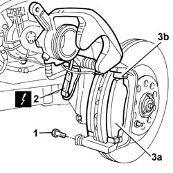

3310A60 FRONT BRAKE PADS - Replace
- Path
- Procedures > 33 BRAKES > 3310 DISC BRAKES > 3310A FRONT DISC BRAKES > 3310A60 FRONT BRAKE PADS - Replace
- Kind
- repair procedure (removal / refitting; the operation number is the code)
- Applies to
- all engines; all production periods
- Interactive page
- https://sloeber94.github.io/elrnDB-lThss/en/#/78520
Applies to: all engines; all production periods
 Removing
Removing
 Refitting
Refitting- Position the vehicle on a lift.
See in Op. 4450B10 Front WHEEL (one) - R.R.
1. Undo the lower bolt fixing the brake caliper to the bracket.
- Rotate the brake caliper.
2. Disconnect the electrical connection for the brake pad wear sensor.
 | Description | Connector |
|---|---|---|
2 | Right brake pad wear sensor (switch) | K021 |
3. Remove the front brake pads (3a) releasing them from the fastening springs (3b).

Applies to: all engines; all production periods
Refitting
Removing- Fit the front brake pads and secure them to the bracket using the fastening springs.
- Connect the electrical connection for the brake pad wear sensor.
| Description | Connector |
|---|---|---|
. | Right brake pad wear sensor (switch) | K021 |
- Compress the front brake caliper piston, using a suitable tool, to facilitate the fitting of the caliper.
 | Description | Code | Function |
|---|---|---|---|
. | Spanner | 1.820.248.000 | Retract front brake piston |
- Rotate the brake caliper.
- Tighten the lower bolt fixing the brake caliper to the bracket.
See in Op. 4450B10 Front WHEEL (one) - R.R.
- Position the vehicle on a lift.